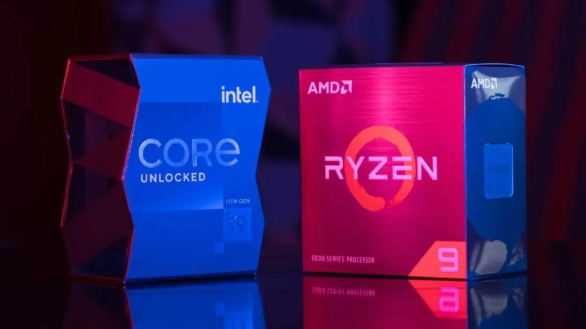

Cómo construir tu propia PC: Guía paso a paso
Este artículo te guía en cada etapa del proceso de ensamblaje de una computadora desde cero, explicando qué componentes necesitas (procesador, tarjeta madre, memoria RAM, almacenamiento, tarjeta gráfica, etc.) y cómo instalarlos correctamente.
Comparativa de procesadores:
Intel vs AMD en 2024

Un análisis detallado de las últimas generaciones de procesadores de Intel y AMD, comparando su rendimiento en diferentes aplicaciones como gaming, edición de video, y multitarea. El artículo también ofrece recomendaciones según diferentes presupuestos.
Optimización de PCs para gaming:
Consejos y trucos

Este artículo se enfoca en cómo mejorar el rendimiento de una PC para juegos, cubriendo aspectos como la optimización de la tarjeta gráfica, ajustes en el sistema operativo, overclocking seguro, y la importancia de un buen sistema de enfriamiento.